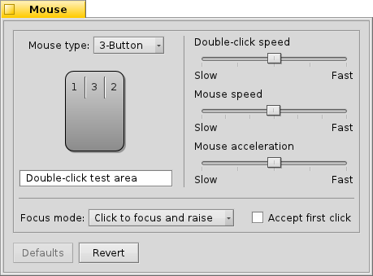

| İçindekiler |
|
Klavye Fare İzleme Dörtgeni |
 Girdi Aygıtları
Girdi Aygıtları
| Masaüstü Çubuğu: | ||
| Konum: | /boot/system/preferences/Input | |
| Ayarlar: | ~/config/settings/Keyboard_settings ~/config/settings/Mouse_settings ~/config/settings/Touchpad_settings |
Girdi Aygıtları tercihleri, daha önceden üç ayrı panelde bulunan klavye, fare, izleme dörtgeni ve diğer girdi aygıtlarının ayarlarını tek bir panelde birleştirir. Aygıtlar sol bölümde listelenir ve sağ yanda aygıt türüne göre değişen kullanılabilir ayarlar bulunur.
 Klavye
Klavye

Buradan basılan bir düğmenin yineleme ve gecikme oranlarını ayarlanabilir. Ayarlarınızı aşağıdaki metin kutusunda sınayabilirsiniz.
| her şeyi öntanımlı değerlere sıfırlar. | ||
| tercihleri başlangıçtaki ayarlara geri döndürür. |
Fare

Önce fare türünüzü düğme sayısına göre belirleyin. CTRL düğmesini basılı tutarak sağ fare tıklamasını öykünebilirsiniz. Üçüncü (orta) fare düğmesi için gereken kombinasyon CTRL ALT ve sol fare düğmesi ile tıklamadır.
Fare düğmelerini üzerlerine tıklayıp üstteki menüden yeni düğme türünü belirleyerek yeniden düzenleyebilirsiniz.
Kaydırma çubuklarıyla sağ tıklama hızını, fare hızını ve ivmelenmesini ayarlayabilirsiniz. Fare şeklinin altındaki sınama alanında sağ tıklama hızının size uygun olup olmadığını sınayabilirsiniz: Eğer sözcük üzerinde çift tıkladığınızda seçilmiyorsa çok hızlı demektir (veya daha hızlı çift tıklamanız gerekir).
Pencerelerin tıklamalara nasıl karşılık vereceğini belirleyebileceğiniz üç adet bulunmaktadır:
| Bu öntanımlı ayardır: Bir pencereye tıklarsınız ve odaklanıp öne gelir. | ||
| Bir pencereye tıklamak odağı o pencereye verir ancak kendiliğinden öne getirmez. Bunu yapmak için ya o pencerenin başlık çubuğuna tıklamanız gerekir veya CTRL ALT pencere yönetim düğmelerinden birine tıklamanız gerekir. | ||
| Fare imleci altındaki pencere kendiliğinden odağa sahip olur. One getirme ise kipindeki gibi gerçekleştirilir. |
seçeneği arka plandaki bir denetime tıklamak için o pencereyi odağa alma zorunluluğundan sizi kurtarır. Ancak bu seçenek yanlışlıkla istemediğiniz düğmelere tıklamanıza da neden olabilir, örneğin bir pencereyi odağa almak isterken yanlışlıkla o pencereyi kapatabilirsiniz. Yine de çalışma akışınızı gözle görülebilir bir biçimde hızlandıracaktır.
Tüm ayarlar anında uygulanır.
| her şeyi öntanımlı değerlere sıfırlar. | ||
| tercihleri başlangıçtaki ayarlara geri döndürür. |
İzleme Dörtgeni

Kırmızı dikey ve yatay çizgileri sürükleyerek kaydırma yapabileceğiniz alanı (hafif kırmızımsı bölüm) ayarlayabilirsiniz. Parmağınızı bu belirleyeceğiniz alanlarda hareket ettirmek içinde bulunduğunuz pencereyi aşağı-yukarı kaydıracaktır.
Sağ yanda genel kaydırma ivmelenmesini ve dikey/yatay kaydırma hızını ayarlayabileceğiniz kaydırma çubukları bulunmaktadır.
İvmelenme ayarı bir kaydırma alanında parmağınızı hızlıca hareket ettirdiğinizde ekranda ne kadar kaydırma olacağını belirler. Kaydırma hızı ise normal parmak hareketlerinde ekrandaki kaydırmanın ne kadar hızlı olacağını ayarlar.
İzleme dörtgeni şeklinin altında dikey ve yatay kaydırma için iki parmaklı kaydırmayı etkinleştiren onay kutuları bulunmaktadır. İki parmağınızı paralel olarak dikey veya yatay düzlemde hareket ettirirseniz pencere içeriği de aynı yönde hareket eder.
Bu özellik hoşunuza gidiyorsa kaydırma alanı belrilemekle uğraşma yerine dörtgenin tamamını kaydırma alanı olarak kullanabilirsiniz.
Aşağı kısımda ise dokunup tıklama hassaslığını ayarlayabileceğiniz bir kaydırma çubuğu bulunmaktadır. Eğer dokunmalarınız kayda alınmıyorsa hassaslığı artırmayı deneyin. Tam tersi durum var ise hassaslığı azaltın.
| her şeyi öntanımlı değerlere sıfırlar. | ||
| tercihleri başlangıçtaki ayarlara geri döndürür. |
Bu bölümde doğrudan İzleme Dörtgeni tercihleri ile ilgili olmasa da bir ipucu bırakmak isteriz:
Hiçbir düğme kullanmadan yalnızca izleme dörtgenini kullanarak sürükle ve bırak yapabileceğinizi biliyor muydunuz? Parmağınızı ikinci tıklamadan sonra kaldırmayacak biçimde çift tıklayın. Sürükleyeceğiniz simge fare imlecine yapışır ve siz parmağınızı bırakıncaya kadar yapışık kalır. Bırakmak istediğiniz yerde parmağınızı kaldırın.
Eğer henüz bırakacağınız konuma gelmediğiniz halde izleme dörtgeninin kenarına geldiyseniz nasıl sürüklemeyi sürdüreceksiniz? Parmağınızı kaldırdığınız anda sürükle bırak işlemi normalde sonlanır.
Sahip olduğunuz donanıma bağlı olmakla birlikte şöyle güzel bir özellik mevcut: İzleme dörtgeninin sonuna geldiğinizde parmağınızı kaldırmadan tutun. Fare imleci kendiliğinden hareket etmeyi sürdürecektir.